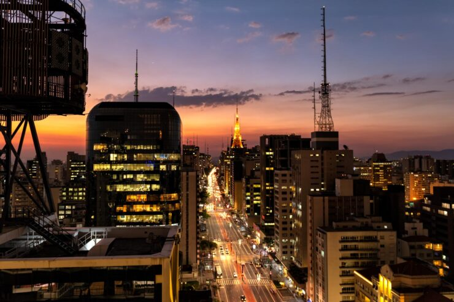
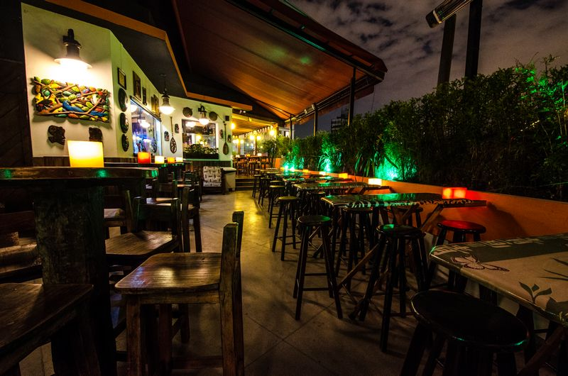
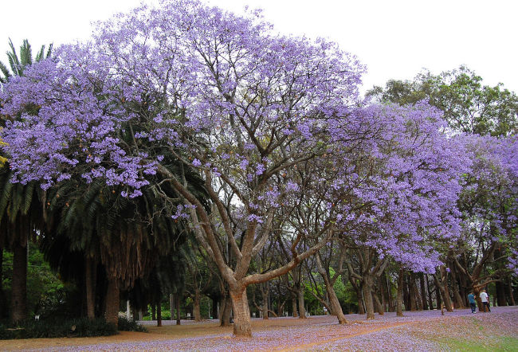

Passear na Avenida Paulista!

Um dos principais centros financeiros da cidade, a avenida Paulista também possui diversas opções de entretenimento. Endereço do Museu de Arte de São Paulo, MASP,do teatro Gazeta e muitos outros, a região é de fácil aesso graças as diversas linhas de ônibus que cruzam a avenida e a linha de metrô que passa por baixo dela.
A avenida Paulista sempre é assunto. O que será que estão falando a respeito no Twitter.
Os bares da Vila Madalena

Depois de um dia de trabalho, nada melhor do que um choup, um petisco e uma conversa em uma mesa de bar.Opções de sobra na região das ruas Aspicuelta, Fradique Coutinho e Wisard.
O Parque do Ibirapuera

Um dos cartões postais da cidade, o parque dispõe de mais de 1,5 km{^2} área verde, lagos artificiais e pistas de cooper e ciclismo. E se isso não fosse o suficiente, o parque costuma ser palco de diversos eventos culturais ao longo do ano.
Veja no mapa como chegar no parque